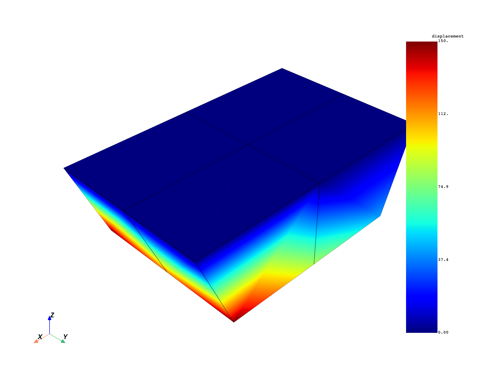
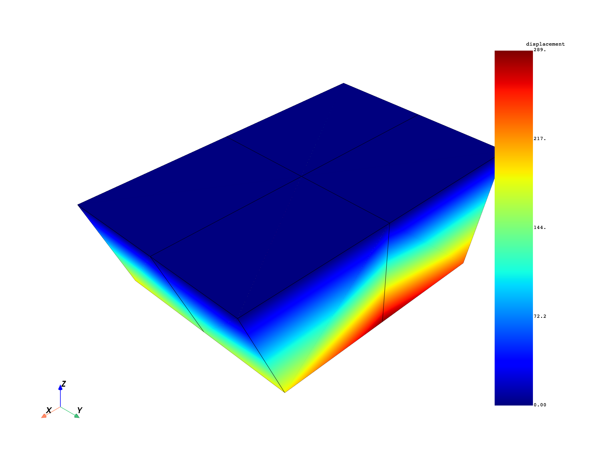
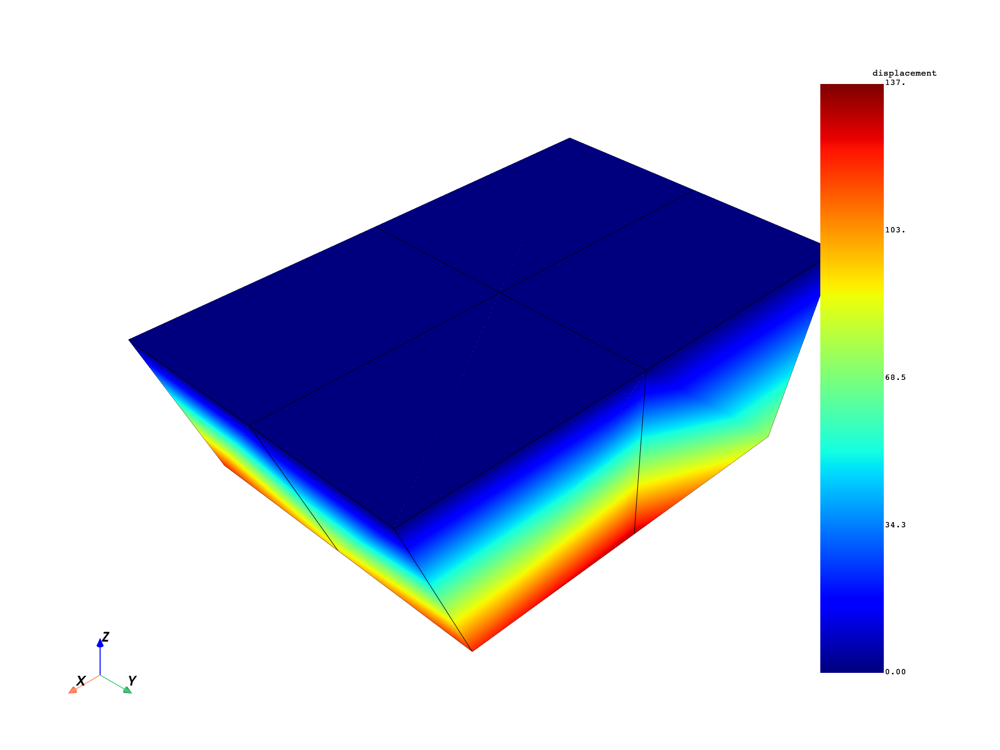

Note
Click here to download the full example code
Get base and duplicate sectors (real and imaginary) results for modal cyclic symmetry#
This example shows how to extract results from a modal cyclic symmetry model.
from ansys.dpf import core as dpf
from ansys.dpf.core import examples
Create the model and display the state of the result.
model = dpf.Model(examples.find_simple_cyclic())
print(model)
DPF Model
------------------------------
Modal analysis
Unit system: MKS: m, kg, N, s, V, A, degC
Physics Type: Mechanical
Available results:
- displacement: Nodal Displacement
- stress: ElementalNodal Stress
- elemental_volume: Elemental Volume
- stiffness_matrix_energy: Elemental Energy-stiffness matrix
- artificial_hourglass_energy: Elemental Hourglass Energy
- thermal_dissipation_energy: Elemental thermal dissipation energy
- kinetic_energy: Elemental Kinetic Energy
- co_energy: Elemental co-energy
- incremental_energy: Elemental incremental energy
- element_euler_angles: ElementalNodal Element Euler Angles
- structural_temperature: ElementalNodal Structural temperature
------------------------------
DPF Meshed Region:
51 nodes
4 elements
Unit: m
With solid (3D) elements
------------------------------
DPF Time/Freq Support:
Number of sets: 30
Cumulative Frequency (Hz) LoadStep Substep Harmonic index
1 670386.325235 1 1 0.000000
2 872361.424038 1 2 0.000000
3 1142526.525324 1 3 0.000000
4 1252446.741551 1 4 0.000000
5 1257379.552140 1 5 0.000000
6 1347919.358013 1 6 0.000000
7 679667.393214 2 1 1.000000
8 679667.393214 2 2 -1.000000
9 899321.218481 2 3 -1.000000
10 899321.218481 2 4 1.000000
11 1128387.049511 2 5 1.000000
12 1128387.049511 2 6 -1.000000
13 708505.071361 3 1 -2.000000
14 708505.071361 3 2 2.000000
15 966346.820117 3 3 2.000000
16 966346.820117 3 4 -2.000000
17 1031249.070606 3 5 -2.000000
18 1031249.070606 3 6 2.000000
19 757366.624982 4 1 -3.000000
20 757366.624982 4 2 3.000000
21 926631.623058 4 3 -3.000000
22 926631.623058 4 4 3.000000
23 1035144.649248 4 5 3.000000
24 1035144.649248 4 6 -3.000000
25 807882.379030 5 1 4.000000
26 856868.410638 5 2 4.000000
27 1063247.283632 5 3 4.000000
28 1185511.741334 5 4 4.000000
29 1278969.844256 5 5 4.000000
30 1355579.879820 5 6 4.000000
Get base and duplicate sectors displacement results#
By default, the result providers (stress, displacement, and so on) will return results for base and duplicate sectors for a cyclic symmetry model.
# Create displacement operator
u_cyc = model.results.displacement.on_all_time_freqs()
fields = u_cyc.outputs.fields_container()
The output fields container print displays the organization of the different fields in the container. The label “base_sector” gives access to base sectors results with base_sector=1 and duplicate sector with base_sector=0 for all modes. The print also displays that there is no duplicate sectors for the first 6 modes. Indeed, modes with harmonic index 0 have 0.0 displacement, stresses… on duplicate sectors.
print(fields)
print(model.metadata.time_freq_support)
# plot mode 7 base sector (real) result
mode_7_base = fields.get_field({"base_sector": 1, "time": 7})
model.metadata.meshed_region.plot(mode_7_base)
# plot mode 7 duplicate sector (imaginary) result
mode_7_duplicate = fields.get_field({"base_sector": 0, "time": 7})
model.metadata.meshed_region.plot(mode_7_duplicate)
- 
- 
DPF displacement(s)Fields Container
with 48 field(s)
defined on labels: base_sector time
with:
- field 0 {base_sector: 1, time: 1} with Nodal location, 3 components and 51 entities.
- field 1 {base_sector: 1, time: 2} with Nodal location, 3 components and 51 entities.
- field 2 {base_sector: 1, time: 3} with Nodal location, 3 components and 51 entities.
- field 3 {base_sector: 1, time: 4} with Nodal location, 3 components and 51 entities.
- field 4 {base_sector: 1, time: 5} with Nodal location, 3 components and 51 entities.
- field 5 {base_sector: 1, time: 6} with Nodal location, 3 components and 51 entities.
- field 6 {base_sector: 1, time: 7} with Nodal location, 3 components and 51 entities.
- field 7 {base_sector: 1, time: 8} with Nodal location, 3 components and 51 entities.
- field 8 {base_sector: 1, time: 9} with Nodal location, 3 components and 51 entities.
- field 9 {base_sector: 1, time: 10} with Nodal location, 3 components and 51 entities.
- field 10 {base_sector: 1, time: 11} with Nodal location, 3 components and 51 entities.
- field 11 {base_sector: 1, time: 12} with Nodal location, 3 components and 51 entities.
- field 12 {base_sector: 1, time: 13} with Nodal location, 3 components and 51 entities.
- field 13 {base_sector: 1, time: 14} with Nodal location, 3 components and 51 entities.
- field 14 {base_sector: 1, time: 15} with Nodal location, 3 components and 51 entities.
- field 15 {base_sector: 1, time: 16} with Nodal location, 3 components and 51 entities.
- field 16 {base_sector: 1, time: 17} with Nodal location, 3 components and 51 entities.
- field 17 {base_sector: 1, time: 18} with Nodal location, 3 components and 51 entities.
- field 18 {base_sector: 1, time: 19} with Nodal location, 3 components and 51 entities.
- field 19 {base_sector: 1, time: 20} with Nodal location, 3 components and 51 entities.
- field 20 {base_sector: 1, time: 21} with Nodal location, 3 components and 51 entities.
- field 21 {base_sector: 1, time: 22} with Nodal location, 3 components and 51 entities.
- field 22 {base_sector: 1, time: 23} with Nodal location, 3 components and 51 entities.
- field 23 {base_sector: 1, time: 24} with Nodal location, 3 components and 51 entities.
- field 24 {base_sector: 1, time: 25} with Nodal location, 3 components and 51 entities.
- field 25 {base_sector: 1, time: 26} with Nodal location, 3 components and 51 entities.
- field 26 {base_sector: 1, time: 27} with Nodal location, 3 components and 51 entities.
- field 27 {base_sector: 1, time: 28} with Nodal location, 3 components and 51 entities.
- field 28 {base_sector: 1, time: 29} with Nodal location, 3 components and 51 entities.
- field 29 {base_sector: 1, time: 30} with Nodal location, 3 components and 51 entities.
- field 30 {base_sector: 0, time: 7} with Nodal location, 3 components and 51 entities.
- field 31 {base_sector: 0, time: 8} with Nodal location, 3 components and 51 entities.
- field 32 {base_sector: 0, time: 9} with Nodal location, 3 components and 51 entities.
- field 33 {base_sector: 0, time: 10} with Nodal location, 3 components and 51 entities.
- field 34 {base_sector: 0, time: 11} with Nodal location, 3 components and 51 entities.
- field 35 {base_sector: 0, time: 12} with Nodal location, 3 components and 51 entities.
- field 36 {base_sector: 0, time: 13} with Nodal location, 3 components and 51 entities.
- field 37 {base_sector: 0, time: 14} with Nodal location, 3 components and 51 entities.
- field 38 {base_sector: 0, time: 15} with Nodal location, 3 components and 51 entities.
- field 39 {base_sector: 0, time: 16} with Nodal location, 3 components and 51 entities.
- field 40 {base_sector: 0, time: 17} with Nodal location, 3 components and 51 entities.
- field 41 {base_sector: 0, time: 18} with Nodal location, 3 components and 51 entities.
- field 42 {base_sector: 0, time: 19} with Nodal location, 3 components and 51 entities.
- field 43 {base_sector: 0, time: 20} with Nodal location, 3 components and 51 entities.
- field 44 {base_sector: 0, time: 21} with Nodal location, 3 components and 51 entities.
- field 45 {base_sector: 0, time: 22} with Nodal location, 3 components and 51 entities.
- field 46 {base_sector: 0, time: 23} with Nodal location, 3 components and 51 entities.
- field 47 {base_sector: 0, time: 24} with Nodal location, 3 components and 51 entities.
DPF Time/Freq Support:
Number of sets: 30
Cumulative Frequency (Hz) LoadStep Substep Harmonic index
1 670386.325235 1 1 0.000000
2 872361.424038 1 2 0.000000
3 1142526.525324 1 3 0.000000
4 1252446.741551 1 4 0.000000
5 1257379.552140 1 5 0.000000
6 1347919.358013 1 6 0.000000
7 679667.393214 2 1 1.000000
8 679667.393214 2 2 -1.000000
9 899321.218481 2 3 -1.000000
10 899321.218481 2 4 1.000000
11 1128387.049511 2 5 1.000000
12 1128387.049511 2 6 -1.000000
13 708505.071361 3 1 -2.000000
14 708505.071361 3 2 2.000000
15 966346.820117 3 3 2.000000
16 966346.820117 3 4 -2.000000
17 1031249.070606 3 5 -2.000000
18 1031249.070606 3 6 2.000000
19 757366.624982 4 1 -3.000000
20 757366.624982 4 2 3.000000
21 926631.623058 4 3 -3.000000
22 926631.623058 4 4 3.000000
23 1035144.649248 4 5 3.000000
24 1035144.649248 4 6 -3.000000
25 807882.379030 5 1 4.000000
26 856868.410638 5 2 4.000000
27 1063247.283632 5 3 4.000000
28 1185511.741334 5 4 4.000000
29 1278969.844256 5 5 4.000000
30 1355579.879820 5 6 4.000000
Get displacement results on the first sector with a cyclic phase#
ansys.dpf.result.cyclic_expanded_displacement gives access
to all cyclic expansion configuration. By default all sectors will be expanded.
The cyclic phase (in degree) can be changed with the phi argument.
u_cyc = dpf.operators.result.cyclic_expanded_displacement(
streams_container=model.metadata.streams_provider,
sectors_to_expand=[0],
time_scoping=[7],
phi=0.0,
)
# # get the mesh expanded on the first sector for consistency between results and mesh
mesh_provider = model.metadata.mesh_provider
mesh_provider.inputs.read_cyclic(2) # read_cyclic=2 allows to expand cyclic result
mesh_provider.connect(18, [0]) # connect the sectors_to_expand
mesh = mesh_provider.outputs.mesh()
mode_7_base = u_cyc.outputs.fields_container()
print(mode_7_base)
mesh.plot(mode_7_base[0])
# a phase phi=90° is equivalent to returning the duplicate sector results:
u_cyc.inputs.phi(90.0)
mode_7_duplicate = u_cyc.outputs.fields_container()
print(mode_7_duplicate)
mesh.plot(mode_7_duplicate[0])
# with phi=45°
u_cyc.inputs.phi(45.0)
mode_7_45 = u_cyc.outputs.fields_container()
print(mode_7_45)
mesh.plot(mode_7_45[0])
- 
DPF Fields Container
with 1 field(s)
defined on labels: time
with:
- field 0 {time: 7} with Nodal location, 3 components and 51 entities.
DPF Fields Container
with 1 field(s)
defined on labels: time
with:
- field 0 {time: 7} with Nodal location, 3 components and 51 entities.
DPF Fields Container
with 1 field(s)
defined on labels: time
with:
- field 0 {time: 7} with Nodal location, 3 components and 51 entities.
Get nodal stress results on the first sector with a cyclic phase#
s_cyc = dpf.operators.result.cyclic_expanded_stress(
streams_container=model.metadata.streams_provider,
sectors_to_expand=[0],
time_scoping=[7],
phi=45.0,
requested_location=dpf.locations.nodal,
)
s_7_45 = s_cyc.outputs.fields_container()
print(s_7_45)
mesh.plot(s_7_45[0])
DPF Fields Container
with 1 field(s)
defined on labels: time
with:
- field 0 {time: 7} with Nodal location, 6 components and 51 entities.
Get elemental_nodal stress results on the first sector with a cyclic phase#
Elemental nodal is the default result location for stress and strain.
s_cyc = dpf.operators.result.cyclic_expanded_stress(
streams_container=model.metadata.streams_provider,
sectors_to_expand=[0],
time_scoping=[7],
phi=45.0,
)
s_7_45 = s_cyc.outputs.fields_container()
print(s_7_45)
# To average the result for each element
to_elemental = dpf.operators.averaging.to_elemental_fc(s_cyc)
s_7_45 = to_elemental.outputs.fields_container()
print(s_7_45)
mesh.plot(s_7_45[0])
DPF Fields Container
with 1 field(s)
defined on labels: time
with:
- field 0 {time: 7} with ElementalNodal location, 6 components and 4 entities.
DPF Fields Container
with 1 field(s)
defined on labels: time
with:
- field 0 {time: 7} with Elemental location, 6 components and 4 entities.
Get nodal stress results expanded#
s_cyc = dpf.operators.result.cyclic_expanded_stress(
streams_container=model.metadata.streams_provider,
time_scoping=[7],
requested_location=dpf.locations.nodal,
)
mesh_provider = model.metadata.mesh_provider
mesh_provider.inputs.read_cyclic(2) # read_cyclic=2 allows to expand cyclic result
mesh = mesh_provider.outputs.mesh()
s = s_cyc.outputs.fields_container()
mesh.plot(s[0])
Total running time of the script: ( 0 minutes 5.347 seconds)